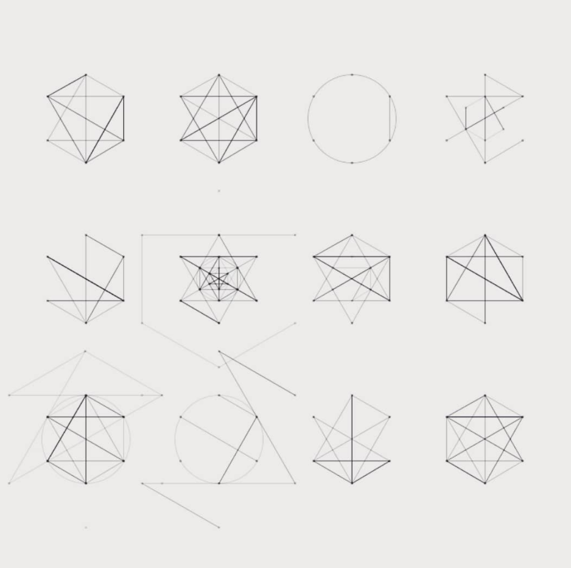
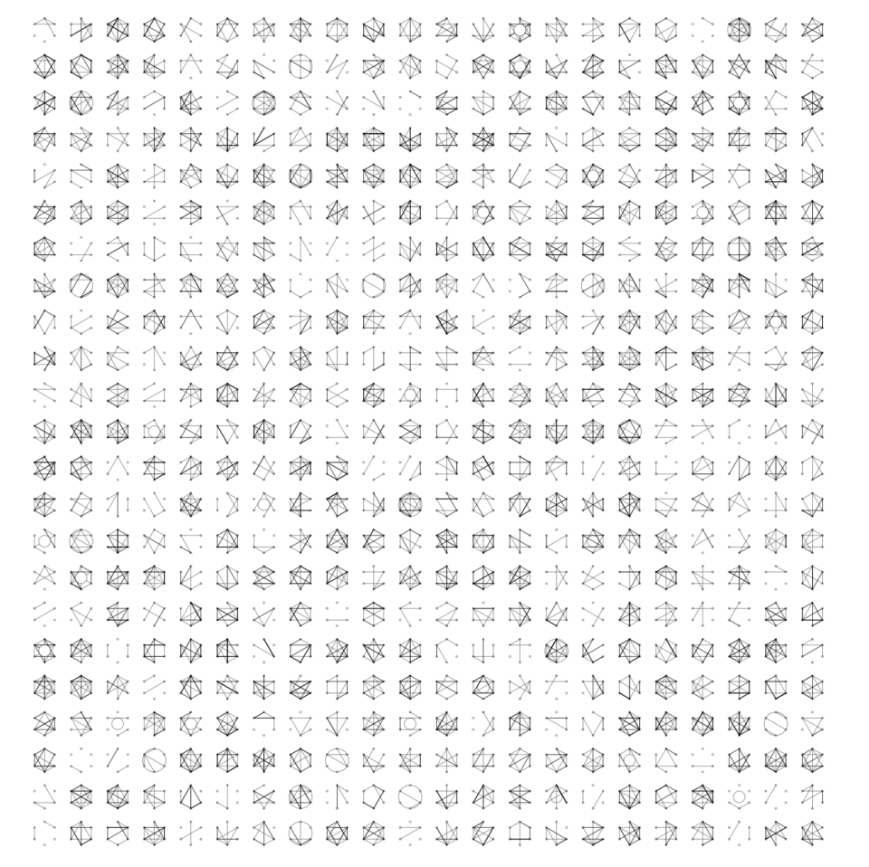

Series Four: Hexagrams

I wrote this a while back after a Todmorden local posted some hexagram sketches he'd done on Instagram.

To run yourself: download Processing and copy the source below. Click the mouse to generate a new matrix, each time a .pdf is saved in the sketch folder (find it from within Processing by selecting the Sketch menu then Show Sketch folder - if you want an .svg use an online pdf to svg converter)
import processing.pdf.*;
int VERTEXES = 6;
int columns = 24;
int rows = 24;
final float RADS = TWO_PI/VERTEXES;
PFont font;
PVector h1 = new PVector(0.0, 100.0);
PVector h2 = new PVector(86.60254, 50.0);
PVector h3 = new PVector(86.60254, -50.0);
PVector h4 = new PVector(0.0, -100.0);
PVector h5 = new PVector(-86.60254, -50.0);
PVector h6 = new PVector(-86.60254, 50.0);
PVector[] hexPoints = new PVector[]{h1, h2, h3, h4, h5, h6};
int hexagramCount = 0;
void setup(){
size(1000, 1000);
}
void draw(){
background(255);
beginRecord(PDF, "hexagrams.pdf");
int columnWidth = width/columns;
int columnHeight = height/rows;
for(int y = 0 ; y < height ; y += columnHeight){
for(int x = 0 ; x < width ; x += columnWidth){
if(x > (columnWidth/2) && x < width - (columnWidth*2)){
if(y > (columnHeight/2) && y < height - (columnHeight)){
hexagramCount++;
new Hexagram(x + columnWidth/2, y + columnHeight/8, columnWidth/3, 0x55000000).draw();
}
}
}
}
endRecord();
noLoop();
}
void mousePressed(){
hexagramCount = 0;
loop();
}
class Hexagram{
float x;
float y;
float radius;
int strokeVal;
Hexagram(float x, float y, float radius, int strokeVal){
this.x = x;
this.y = y;
this.radius = radius;
this.strokeVal = strokeVal;
}
void draw(){
stroke(strokeVal);
for(int i = 0 ; i < VERTEXES; i++){
float xx = radius*sin(RADS*i) + x;
float yy = radius*cos(RADS*i) + y;
//point(xx, yy);
ellipse(xx, yy, 2, 2);
hexPoints[i] = new PVector(xx, yy);
}
int lines = (int) random(30) + 2;
//Steadily increase lines per Hexagram
//lines = (int)map( (float) hexagramCount, 1f, columns*rows, 1f, 40f);
for(int i = 0 ; i < lines; i++){
int index1 = (int) random(0, VERTEXES);
int index2 = (int) random(0, VERTEXES);
line(hexPoints[index1].x, hexPoints[index1].y, hexPoints[index2].x, hexPoints[index2].y);
}
float rand = random(100);
if(rand < 5) {
if(random(100) < 50){
noFill();
}else{
fill(255);
}
ellipse(x, y, radius, radius);
}else if(rand < 10) {
noFill();
ellipse(x, y, radius*2, radius*2);
}else if(rand < 20) {
//new Hexagram(x, y, radius/2, 0x33000000).draw();
}else if(rand < 30) {
//new Hexagram(x, y, radius*2, 0x33000000).draw();
}
}
}